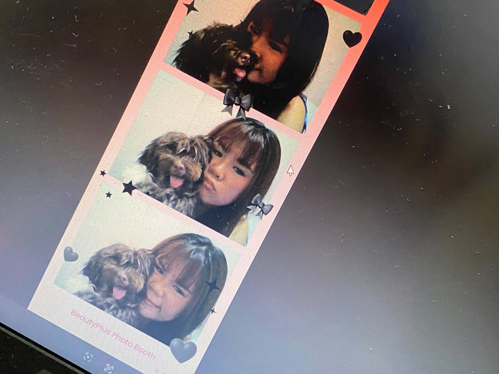

I really loved dogs, but I never thought that I would have one of my own
I was not planning to raise a dog, and I did not feel ready to take care of one.
I knew that having a dog was a big responsibility. But then, my boyfriend gift me a dog,
and she suddenly became a part of my life.
At first, I was not sure if I could take care of her properly. But time passed,
I learned how to feed her, look after her, and give her the love and attention she needed.
little by little, I became attached to her. And became someone I looked forward to seeing every day.